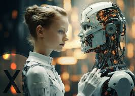
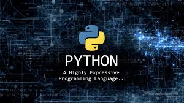

This section focuses on fundamental software and solves problems from a programming perspective.
Programming is the language of the modern age, the magic tool that powers the technology around us. It's not just about writing complex code; it's the art of problem-solving, transforming innovative ideas into applications, websites, and intelligent systems that make daily life easier and shape the future.
Software engineering, or computer science in general, is divided into several branches:

1-Artificial Intelligencee

2-software
3-Cybersecurity

4-Web Design and Programming
5- Networks
What's great about programming is that you don't need a huge amount of capital to get started. All you need is a computer, internet access, and a passion for learning. Programming empowers you to build a project that serves millions, all from the comfort of your own room. So, if you're looking for a skill to shape the future, programming is the place to start.

C++ is one of the most powerful and established programming languages in the world. It was developed to give the programmer complete and direct control over system resources and memory (hardware)
Java is one of the most popular, stable, and reliable programming languages in the history of technology. Since its launch, it has been known for its slogan "Write Once, Run Anywhere," meaning that code

Python is the fastest-growing and most popular programming language today. Its appeal lies in its remarkable simplicity; it's written in words very similar to English, making it a favorite among both beginners
Computer networks are the backbone of every technological system in the world today. They are the science and art of connecting devices, servers, and systems to each other, enabling them to exchange data and information quickly, securely, and efficiently. From the simplest home network (Wi-Fi) to the vast internet that spans the globe, networks are the fundamental engine of all digital communication.
.jpg)
.jpg)
.jpg )
The main types of networks (according to geographic scope) vary based on the area they cover to meet different needs: Local Area Network (LAN): Covers a small and limited geographic area, such as an office, home, or university building. It is characterized by its high speed and secure data transmission via Ethernet cables or Wi-Fi. Metropolitan Area Network (MAN): Has a larger scope, connecting several LANs within a single city or extended region (such as connecting bank branches together within a capital city). Wide Area Network (WAN): Extends across vast geographic areas, such as countries or continents. The internet is the largest example of a WAN, connecting the entire world.
Artificial Intelligence (AI) is no longer a concept of science fiction. It is the defining technology of the 21st century. At its core, AI represents the development of computer systems capable of performing tasks that historically required human intelligence. We are witnessing a shift where machines do not just follow static code, but learn, adapt, and evolve. AI is acting as the central nervous system of the new digital economy.
.jpg)
.jpg)
.jpg)
.jpg)
.jpg)
To understand AI deeply, we must look at its two most powerful subfields:Machine Learning (ML): The process where computers analyze massive amounts of data to find patterns and make decisions without explicit programming.Deep Learning (DL): A advanced subset of ML that uses artificial neural networks, mimicking the human brain to solve highly complex problems like facial recognition and natural language processing.
In an interconnected world where data is the new oil, Cybersecurity has evolved from an IT requirement into a strategic global necessity. Every second, billions of devices exchange sensitive financial, personal, and governmental data across networks. Cybersecurity is the practice of protecting these systems, networks, programs, and data from digital attacks. It is the invisible shield that keeps the modern digital economy from collapsing into chaos.
As technology evolves, cybercriminals deploy increasingly sophisticated methods to exploit vulnerabilities:Ransomware: Malicious software that encrypts an organization's data, holding it hostage until a massive ransom is paid.Phishing Attacks and data from digital attacks. It is the invisible shield that keeps the modern digital economy employees or disgruntled insiders.
A website is no longer just an online address; it is the digital face, the handshake, and the storefront of a brand [1]. Web Design is the art and science of creating that digital experience. It is where creativity meets technology to transform a blank screen into a functional, beautiful space where businesses connect with human beings [1]. A great web design doesn't just attract visitors; it tells a story and turns casual clicks into lifelong customers [1].
.jpg)
longer a luxury or a static digital brochure; it is a living, breathing ecosystem, a virtual storefront, and the primary touchpoint between an organization and its global audience. Web Design is the multidisciplinary practice of planning, conceptualizing, and arranging content online. It bridges the gap between pure artistic expression and raw software engineering, combining psychology, aesthetics, and technology to build interactive digital environments that shape human behavior. UX is how a website feels and how easily a user can achieve their goals. It is the blueprint and the skeleton.Information Architecture (IA): Organizing content logically so that navigation feels completely intuitive and effortless.Wireframing & Prototyping: Sketching structural layouts before adding colors, ensuring that the user's flow from page to page makes sense.Interaction Design: Designing how elements react when hovered over, clicked, or scrolled, making the site feel alive and responsive.